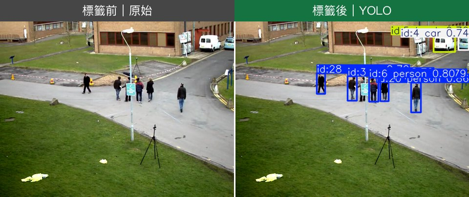

一條標準流程：影片進去 → 物件偵測 → 追蹤 → 輸出標籤。 從標準標的（人、車）入門，再換成你自己的居家或工廠場景。
給模型一張影像，它回答兩件事：有什麼（類別）、在哪裡（位置框）。 YOLO（You Only Look Once）一次掃過整張圖就同時給出所有物體的框與類別，速度快到能跑即時影片。
人、車、動物等 COCO 內建類別，免訓練直接用——本頁示範就是這層。
換成你家的 ipcam，偵測人/車/寵物並通知，仍用同一條流程。
工廠自家產品（COCO 沒有）→ 自己標註訓練 → 產線計數。
每一個被偵測到的物體，會疊上一個框與一行文字。看懂這四件事就懂標籤了：

物體的位置與大小（矩形框住它）。
這是什麼，如 person、car、bus。
0~1 的數字，越接近 1 模型越確定，如 0.80。
如 id:3，跨影格認出「同一個」物體（ByteTrack），用來去重與計數。
同一條流程跑在不同場景。左邊原始、右邊 YOLO 標註，注意框、類別、信心度與追蹤 ID。
框住物體的矩形，由左上、右下座標定義。
類別 + 信心度；設門檻（如 0.35）過濾低信心的偵測。
同一物體常被框很多次，NMS 只留最好的一個框。
把每幀的框串成軌跡並給穩定 ID，避免同一物體重複計數。
物體的軌跡越過一條計數線就 +1，產線計數就靠這個。
權威說明見 Ultralytics 官方文件。
免安裝、用免費 T4 GPU。換一支你自己的公開影片網址，看模型怎麼標。
| 階梯 | 標的物 | 影像來源 | 要訓練嗎 |
|---|---|---|---|
| 教學 | 標準（人/車/動物） | YouTube 公開影片 | 否 |
| 居家 | 通用（人/車/寵物） | ipcam RTSP | 否 |
| 工業 | 專用（自家產品） | 工廠 RTSP | 是（合成+微調） |
示範影片皆為可公開重製之素材，標註結果由本課程 Colab 流程產生。
本站程式碼開源於 GitHub。教材內容供教學使用。